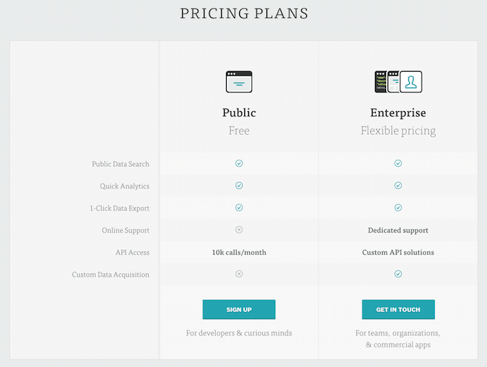

Twitter: Using Analytics to Innovate
University of Maryland, Marketing Analytics
Lina Yang, Kevin Yang, Kyle Suess
5 May 2015
Why Twitter?
Let's see what Co-Founder Jack Dorsey has to say about it.
Visualizing 6.3 Billion Tweets
Beyond Just a Social Media Platform
Twitter EngineeringUniversity
- Lots of cool videos to help students out with projects related to Twitter
- Tutorials on best practices related to Twitter data science and analysis
- Occassional lecture events hosted at campuses nationwide
Open Source
- Twitter very actively publishes and pursues open source projects on GitHub
- Many useful web projects originated from Twitter: Bootstrap, Bower, Typeahead, Ambrose (for Hadoop visualizations)
- Some of Twitter's open source projects now seen as "standards"
Research
- Academic papers on topics such as: Machine Learning at Twitter, Anomaly Detection, Churn in Tweets and real-time search queries, Distilling Twitter data in visualizations
- Twitter features publications on it's website for the community to view
- Heavy academic focus on: Information Retrieval, Data Visualization, Data Mining, and Data Science
Twitter: Analytics to Drive Innovation

"How can we connect people with the world around them?"
- What do our users post? Text, Video, Images, Links?
- What content are they seeing? Sponsored, Original, Retweeted?
- What relationships exist between these entities?
To understand and answer these questions we need advanced analytics (and an appreciation for machine learning).
"But what about user interests?"
This is an even harder (more abstract) problem to solve.
- What are users are interested in right now?
- What if their interests fade or change?
- How does that change our recommendation engine and the way we display content?
- How do we maintain a consistent user experience fitting to a person's interests?
- How do we ensure quality content (no obtrusive spam)?
Data Science: Boosting Development
Semantic Analysis → The way people talk and what their speech means. An important subset of Natural Language Processing. If you know the context surrounding a statement, you can interpret it better and make better inferences.
ex. "too much turkey today. im so full of it and sleepy"
What does this mean?
- A: You had a bad trip in Turkey
- B: You are overstuffed from Thanksgiving
Data Science: Boosting Development

Sentiment Analysis: Helps Twitter understand opinions (good/bad sentiments) in Tweets, classify hashtags and text, and recognize named entities. Used to build better topic models, detect trends, categorize events.

Clustering: Helps Twitter with pattern recognition in news/information sources, finding user groups or segments, and suggesting similar users. Cluster analysis helps keep users interested in the community by revealing things they would likely be interested in.
How is Twitter doing as a business and What can they do better?

The Business Side: TWTR
- 2015 Q1 revenue of $436M (below expected $450M)
- 2015 Q1 net loss of $162M
- 2015 Q1 GAAP Earnings Per Share of ($0.25)
It's not about how much you earn, but what you're worth. And who's worth the most? Companies that lose money.
- Silicon Valley, "Bad Money"
Improving Innovation Analytics
Open Innovation: Developers are your friends.
- Twitter has a historically shaky relationship with developers as a result of strict rules and minimal support.
- Encourage developers to use Twitter services in their apps.
- Tune the API based on feedback from developers.
- Jointly identify need areas in more optimal content delivery methods.
Fabric: A Step in the Right Direction

Improving Innovation Analytics
Less House of Cards, More House of Quality
We’ve got to do a better job of organizing content experiences for people who don’t log into Twitter, but see Twitter content all the time - Twitter CEO
Twitter is being seen, but its not engaging with the Voice of the Customer. USA is the main market for Twitter at the moment (and has the most overall users), but is only the fifth-most active country on Twitter after Kuwait, Netherlands, Brunei, and the UK.
Open Up the Data Firehose

Utilize existing data streams and data warehouse to provide access to insightful data at a cost. Practical for B2B marketing organization wanting valuable user data and willing to pay for millions of API calls.
A Practical Example
Emphasis on Image Processing
With image uploads, Vine, and Periscope - image and video processing is the future. Twitter should more strongly stress employee and business testing of image processing concepts to test adoption potential.

Appendices
- The Changing Face of User Understanding: Text Mining, Deep Learning and Beyond - Alek Kolcz, Clement Farabet
- Everything You Need to Know About the New Twitter Ads
- Twitter Cuts off DataSift To Step Up Its Own Big Data Business
- #TWITTERNOMICS - The Circles of Twitter
- Twitter Improves Ads, Selling Them Through Google's DoubleClick
- Twitter Buys MoPub for $350M To Up Ante In Mobile Advertising
Appendices
- Twitter Ads: You Can Now Target Customers Via Their Email or Twitter ID
- Twitter Introduces Fabric, it's first platform for mobile app developers
- Meet The New Twitter Analytics Tool
- Twitter Ads Add Intrigue
- Twitter Sentiment Visualization
- 5 Reasons That Innovation at Twitter Might Take a Hit
- Twitter's Data Business Proves Lucrative
- Innovation, Culture And Some Insights From Twitter
- Twitter and its Approach to Innovation